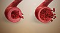

vasodilation

Definition: Vasodilation, also known as vasorelaxation, is the widening of blood vessels. It results from relaxation of smooth muscle cells within the vessel walls, in particular in the large veins, large arteries, and smaller arterioles. The process is the opposite of vasoconstriction, which is the narrowing of blood vessels.
Source: Wikipedia
Wikipedia Page
Wikidata Page